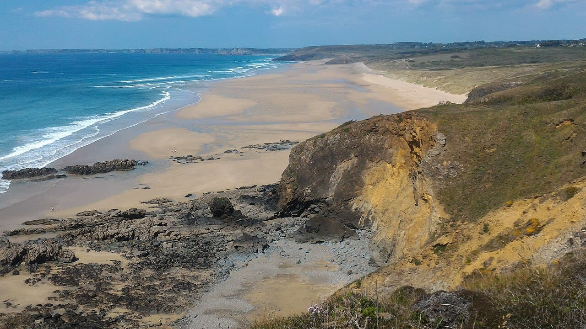

La Palue
Finistère, France · surf

Plage sauvage et splendide de la presqu'île de Crozon, exposée plein ouest. Vague puissante dans un cadre totalement préservé, sans aucune construction.
- Lieu
- Finistère, France
- Niveau
- Expert
- Activités
- surf
- Type d'eau
- Mer / océan
- Coordonnées
- 48.21, -4.59 (position approximative du secteur)
Dangers à connaître
- Houle puissante et courants forts.
- Aucune surveillance, spot isolé.
- Eau froide toute l'année.
Le conseil d'Ocean Buddy
Spot d'engagement : seul le large encaisse. Va-y accompagné et par conditions raisonnables.
Ouvrir dans Ocean Buddy Télécharger sur l'App Store
Source : Description historique Ocean Buddy · vérification externe en attente.